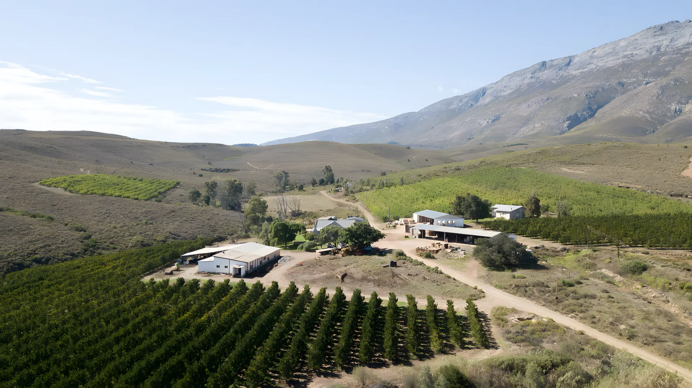

Farms for sale / Montagu / Ref 479
Farmer's Choice
A versatile fruit, sheep and cash crop farm at the end of the road, at the foot of the Langeberg Mountains. Magnificent views, a comfortable family house, and a successful operation in full swing.
The three title deeds (three adjacent farms) each have their own qualities and opportunities, over more than 800 hectares. Fruit is the main money spinner: about 8 ha apricots, 14 ha peaches, 3 ha pears and 8 ha arable land. Tons of dried fruit are produced every year, and the sale includes two storage containers and about 1,000 drying racks, plus the current owners' recipes, outlets and tricks of the trade.
Cash crops like vegetables, berries and seed can be explored, and oats have been planted under dryland conditions as pasture for sheep or goats. The farm deeper into the mountains has forests and valleys with room for chalets and glamping tents.
Manor house (200 m² +)
Recently renovated Karoo farm-style house: 3 bedrooms, 2 bathrooms (one en-suite), kitchen with pantry, dining room, lounge and a large entertainment area with a built-in braai. Fenced and dog friendly. Close by: a farm shop, the manager's office and a store room.
Second house
A two-bedroom, one-bathroom manager's house with kitchen, lounge and dining room, in need of a little TLC. Fenced and dog friendly.
Two new barns (450 m² and 300 m²)
In excellent condition. One is used for fruit sorting and drying, the other stores the farming implements, which are included in the sale.
Water
The farm owns a large water catchment area and registered water rights of more than 196,000,000 litres a year. Seven earth dams are connected to the irrigation system, with a total capacity of 245,000,000 litres. Household water comes from two mountain sources, and two boreholes have submersible pumps in good working order.
Implements and equipment
The going concern comes with the implements and equipment to carry on as before. Sold as a going concern, VAT at 0%.
Photos
Not quite the one?
There are 32 more farms on the books, and if we do not have it, we will find it.
See everything on the books